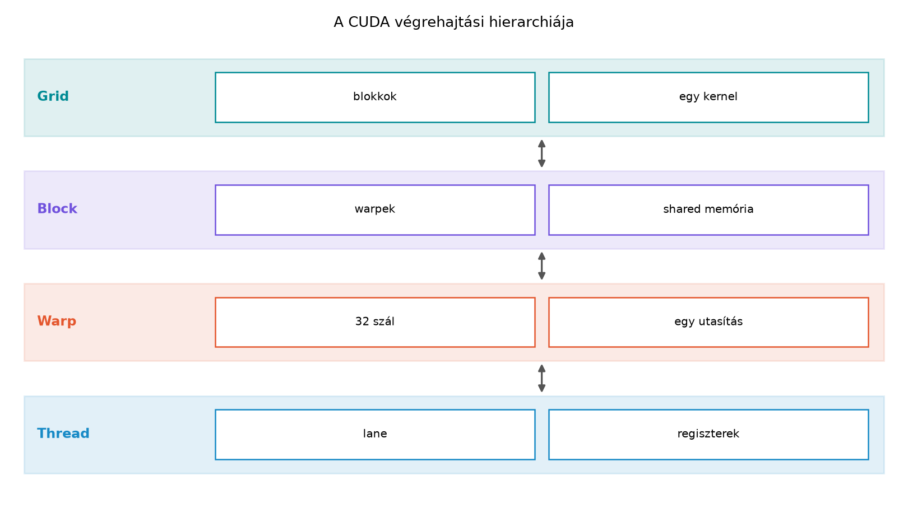

A CUDA végrehajtási modelljének megértéséhez először két, egymástól élesen elkülönülő hierarchiát kell szétválasztanunk: a logikai hierarchiát, amelyet a programozó a kernelindításkor megad, és a fizikai hierarchiát, amelyet a hardver a végrehajtás során létrehoz. A kettő közötti leképezés határozza meg, hogy egy adott launch konfiguráció hogyan használja ki a GPU erőforrásait. Ez a fejezet ezt a kapcsolatot járja körül, és egy olyan laborral zárul, amelyben a leképezés lépéseit konkrét API-hívásokkal ellenőrizzük.

A CUDA programozási modellben a párhuzamos munka egysége a thread. Egy thread önálló vezérlési folyammal rendelkezik, saját regiszterállapota és lokális memóriája van, és a kernelutasítások sorozatát hajtja végre. A thread fogalma azonban önmagában nem elegendő: több ezer vagy több millió szál kezeléséhez a modell két további szerveződési szintet vezet be.
A block thread-ek egy csoportja, amelyek logikailag
összetartoznak. Egy blockon belül a szálak együtt ütemezhetők,
megoszthatnak egy gyors, közös memóriaterületet (shared memory), és
szinkronizálhatják egymást a __syncthreads() hívással. A
block mérete a kernelindításkor rögzített, és a blockon belüli szálak
száma a blockDim beépített változóval kérdezhető le. A
block legfeljebb háromdimenziós lehet, így blockDim.x,
blockDim.y és blockDim.z adja meg a
kiterjedést. A blockon belüli szál pozícióját a threadIdx
struktúra azonosítja, amelynek x, y és
z komponensei vannak.
A grid a block-ok egy- vagy többdimenziós tömbje. A
grid mérete a kernelindításkor megadott gridDim értékből
derül ki, az egyes block-ok pozícióját pedig a blockIdx
struktúra adja meg. A grid és a block együttesen határozza meg a kernel
által elindított összes szál számát: gridDim * blockDim. A
grid lehet egydimenziós, de akár háromdimenziós is, ami különösen
kényelmes olyan problémáknál, amelyek természetesen illeszkednek 2D vagy
3D rácsokhoz, például képfeldolgozás vagy térbeli szimuláció esetén.
A logikai hierarchia legfontosabb tulajdonsága, hogy teljesen elvont,
és nem függ a konkrét hardvertől. A programozó a kernelben csak a
threadIdx, blockIdx, blockDim és
gridDim értékekkel dolgozik, anélkül, hogy ismerné, hány
streaming multiprocesszor (SM) található az adott GPU-ban, vagy hogy az
ütemező mikor és hová helyezi a block-okat. Ez a hardverfüggetlen
absztrakció teszi lehetővé, hogy ugyanaz a kernel különböző
GPU-generációkon is fusson, feltéve, hogy a szükséges compute capability
rendelkezésre áll.
Egy tipikus egydimenziós kernelben a globális szálazonosító kiszámítása a következőképpen történik:
int tid = blockIdx.x * blockDim.x + threadIdx.x;Ez a képlet a gridben elfoglalt pozíciót lineáris indexszé alakítja. Többdimenziós esetben az indexelés ennek megfelelően bővül, például 2D-s grid és 2D-s block esetén:
int x = blockIdx.x * blockDim.x + threadIdx.x;
int y = blockIdx.y * blockDim.y + threadIdx.y;
int tid = y * (gridDim.x * blockDim.x) + x;A logikai hierarchia tehát a programozó számára egy kényelmes koordináta-rendszert ad, amelyben a párhuzamos munka természetes módon szervezhető.
A hardver oldalán a GPU több streaming multiprocesszorból (SM) épül fel. Az SM a legfontosabb végrehajtási egység: minden SM saját regiszterfájllal, shared memory-val, L1 cache-sel, valamint több végrehajtó egységgel rendelkezik. A block-ok az SM-ekre kerülnek kiosztásra, és egy block teljes egészében egyetlen SM-en fut. Egy SM viszont egyszerre több block-ot is képes befogadni, amennyiben az erőforrások (regiszterek, shared memory, thread-kapacitás) ezt lehetővé teszik.
Az SM-en belül a szálak nem egyenként, hanem warp-okba szervezve hajtódnak végre. A warp 32 szálból álló csoport, amely az SM-en belüli legkisebb ütemezési egység. A warp-ok a warp scheduler-ekhez tartoznak: minden SM több schedulerrel rendelkezik (a legtöbb modern GPU-n 4 scheduler található SM-enként), és minden scheduler minden órajelciklusban legfeljebb egy warp-ot tud kiadni végrehajtásra. A warp szálai ugyanazt az utasítást hajtják végre ugyanabban az időben, ez a SIMT (Single Instruction, Multiple Thread) végrehajtási modell. Ha a vezérlési folyam elágazik, a warp divergenssé válik, és a különböző ágak sorosan futnak le – ezt a következő fejezet tárgyalja részletesen.
A warp-on belüli szálakat lane-nek nevezzük, és a
lane-ek 0-tól 31-ig számozódnak. A warp mérete a CUDA-hardverben 32, és
ez a legtöbb GPU-generációban állandó. A warpSize
eszköztulajdonság ezt az értéket adja vissza, és a programozónak ezt
figyelembe kell vennie a blockméret megválasztásakor.
A fizikai hierarchia tehát a következő: a GPU több SM-ből áll, minden SM több warp schedulerrel rendelkezik, minden scheduler warp-okat ütemez, és minden warp 32 szálat foglal magában. A block és a grid logikai fogalmai erre a fizikai szerkezetre képződnek le.
A kernelindításkor a CUDA runtime a grid block-jait az SM-ekhez rendeli. A leképezés alapelvei a következők:
Az SM-ek száma a GPU típusától függ: például egy NVIDIA A100 GPU-ban
108 SM található, míg egy kisebb, például egy GeForce RTX 3060 esetén ez
a szám jóval alacsonyabb, 28. A cudaGetDeviceProperties
API-val ez az érték lekérdezhető (multiProcessorCount). A
grid mérete általában sokkal nagyobb, mint az SM-ek száma, ezért a
block-ok hullámokban kerülnek végrehajtásra. Egy adott időpontban minden
SM-en legfeljebb annyi block aktív, amennyit az erőforrás-korlátok
lehetővé tesznek; a többi block a sorban vár.
A leképezés szempontjából három fő erőforrás-korlátot kell figyelembe venni:
A tényleges resident block-szám ezen korlátok
minimuma. Ez a leképezés a
cudaOccupancyMaxActiveBlocksPerMultiprocessor API-val
lekérdezhető, amely a kernel attribútumai alapján kiszámítja, hány block
lehet egy SM-en egyidejűleg aktív.
Fontos megérteni, hogy a block-ok SM-ekhez rendelése nem determinisztikus sorrendben történik, de a végrehajtás eredménye determinisztikus, feltéve, hogy a kernelben nincs adatverseny. A grid mérete és az SM-ek száma közötti viszony határozza meg, hogy a GPU mennyire telített: ha a grid túl kicsi, az SM-ek egy része üresen marad, ha túl nagy, a block-ok sorban várnak, ami viszont a latency hiding szempontjából előnyös lehet.
Az occupancy az SM-ek kihasználtságának egyik leggyakrabban használt mérőszáma. Formálisan az aktív warp-ok számának és az SM-en lehetséges maximális warp-számnak a hányadosa:
A maximális warp-szám az SM threads-per-SM korlátjából adódik, elosztva a warp méretével (32). Például ha egy SM legfeljebb 2048 szálat kezelhet, akkor a maximális warp-szám:
Ha a kernelünk 256 szálas block-okat indít, és az SM-en 8 block aktív, akkor az aktív warp-ok száma:
Ez teljes occupancy-t jelent, azaz 100%-ot. Ha viszont a shared memory korlát miatt csak 4 block fér el, akkor az aktív warp-ok száma 32, az occupancy pedig 50%.
Az occupancy fontos szerepet játszik a latency hiding-ban. A GPU-k nagy áteresztőképességét az adja, hogy az SM-ek sok aktív warp-ot tartanak nyilván, és amíg az egyik warp memóriaműveletre vár, a scheduler egy másik, már futásra kész warp-ot ad ki. Minél magasabb az occupancy, annál több warp közül választhat a scheduler, így jobban el tudja rejteni a memória-késleltetést és a függőségi szüneteket. A magas occupancy azonban nem jelent automatikusan maximális teljesítményt: előfordulhat, hogy a magasabb occupancy érdekében kisebb blockméretet választunk, ami viszont csökkenti a shared memory-használat hatékonyságát, vagy a regiszterek szűkössége miatt spill-hez vezet. Az occupancy tehát egy fontos diagnosztikai mutató, de nem az egyetlen optimalizálási cél.
A következő labor célja, hogy egy konkrét kernel esetén
megvizsgáljuk, hogyan képeződik le a grid és a block az SM-ekre. A példa
CUDA C++-ban íródott, C++17 szabvánnyal, és a nvcc 12.4-es
verziójával fordítható. A kód minden CUDA API-hívást ellenőriz egy
egyszerű hibamakróval, lekéri az eszköz tulajdonságait, majd a
cudaOccupancyMaxActiveBlocksPerMultiprocessor segítségével
meghatározza, hány block lehet aktív SM-enként. A kernel egy egyszerű
indexelési feladatot végez: minden szál a saját globális indexét írja
egy kimeneti tömbbe. Ezzel ellenőrizhető, hogy a logikai indexszámítás
helyes-e.
// CUDA C++ (C++17), nvcc 12.4
#include <cstdio>
#include <cstdlib>
#include <cuda_runtime.h>
#define CUDA_CHECK(call) \
do { \
cudaError_t err = (call); \
if (err != cudaSuccess) { \
std::fprintf(stderr, "CUDA error at %s:%d: %s\n", \
__FILE__, __LINE__, cudaGetErrorString(err)); \
cudaDeviceReset(); \
std::exit(EXIT_FAILURE); \
} \
} while (0)
__global__ void map_kernel(int *out, int n) {
int tid = blockIdx.x * blockDim.x + threadIdx.x;
if (tid < n) {
out[tid] = tid;
}
}
int main() {
int device = 0;
CUDA_CHECK(cudaSetDevice(device));
cudaDeviceProp prop;
CUDA_CHECK(cudaGetDeviceProperties(&prop, device));
const int block_size = 256;
const int n = 1 << 20; // 1 Mi elem
const int grid_size = (n + block_size - 1) / block_size;
int *d_out;
CUDA_CHECK(cudaMalloc(&d_out, n * sizeof(int)));
map_kernel<<<grid_size, block_size>>>(d_out, n);
CUDA_CHECK(cudaGetLastError());
CUDA_CHECK(cudaDeviceSynchronize());
// Kernel attribútumok lekérése
cudaFuncAttributes attr;
CUDA_CHECK(cudaFuncGetAttributes(&attr, map_kernel));
// Aktív block-ok számának lekérdezése
int num_blocks_per_sm = 0;
CUDA_CHECK(cudaOccupancyMaxActiveBlocksPerMultiprocessor(
&num_blocks_per_sm, map_kernel, block_size, 0));
// Eredmény ellenőrzése
int *h_out = new int[n];
CUDA_CHECK(cudaMemcpy(h_out, d_out, n * sizeof(int), cudaMemcpyDeviceToHost));
bool ok = true;
for (int i = 0; i < n; ++i) {
if (h_out[i] != i) {
ok = false;
break;
}
}
std::printf("Device: %s\n", prop.name);
std::printf("Compute capability: %d.%d\n", prop.major, prop.minor);
std::printf("Number of SMs: %d\n", prop.multiProcessorCount);
std::printf("Max threads per SM: %d\n", prop.maxThreadsPerMultiProcessor);
std::printf("Warp size: %d\n", prop.warpSize);
std::printf("Block size: %d\n", block_size);
std::printf("Grid size: %d\n", grid_size);
std::printf("Registers per thread: %d\n", attr.numRegs);
std::printf("Shared memory per block: %zu bytes\n", attr.sharedSizeBytes);
std::printf("Max active blocks per SM: %d\n", num_blocks_per_sm);
std::printf("Theoretical max resident warps per SM: %d\n",
(num_blocks_per_sm * block_size) / prop.warpSize);
std::printf("Index check: %s\n", ok ? "OK" : "FAILED");
delete[] h_out;
CUDA_CHECK(cudaFree(d_out));
CUDA_CHECK(cudaDeviceReset());
return 0;
}Fordítás és futtatás:
# Fordítás
nvcc -std=c++17 -O3 -arch=sm_80 -o gpu014_lab gpu014_lab.cu
# Futtatás
./gpu014_labA laborhoz rögzített környezet (helyettesítő, izolált labor):
A mérési naplóban a várt és a mért értékeket elkülönítve adjuk meg. A várt értékek a hardverparaméterekből és a kernel attribútumaiból számíthatók, a mért értékek pedig a futtatás során az API-k által visszaadott eredmények.
| Jellemző | Várt érték (számított) | Mért érték (labor, illusztráció) |
|---|---|---|
| SM-ek száma | 108 (A100 specifikáció) | 108 (cudaGetDeviceProperties) |
| Warp size | 32 | 32 |
| Max threads per SM | 2048 | 2048 |
| Block size | 256 | 256 |
| Grid size | 4096 | 4096 |
| Registers per thread | 16 (fordítás után) | 16 (cudaFuncGetAttributes) |
| Shared memory per block | 0 bájt | 0 bájt |
| Max aktív block/SM | 8 (thread-limit: 2048 / 256) | 8 (occupancy API) |
| Aktív warp/SM | 64 | 64 |
| Max warp/SM | 64 | 64 |
| Occupancy | 100% | 100% |
A táblázatban a „mért” oszlop illusztráció; a saját laborban a kapott értékeket kell rögzíteni. A várt és a mért értékek itt egybeesnek, mert a kernel egyszerű, és az egyetlen korlát a thread-limit. Ha a kernel több regisztert vagy shared memory-t igényelne, a várt és a mért értékek eltérhetnének a többi korlát miatt.
A leképezés ellenőrzésének menete:
prop.multiProcessorCount).prop.maxThreadsPerMultiProcessor).cudaFuncGetAttributes).maxThreadsPerMultiProcessor / block_sizeregsPerSM / (attr.numRegs * block_size)sharedMemPerSM / attr.sharedSizeBytesEbben a példában a map_kernel 16 regisztert használ
szálanként, és nincs shared memory-igénye. A regiszter-limit:
A thread-limit:
A shared memory-limit nem korlátoz. A minimum tehát 8 block, ami teljes occupancy-t eredményez.
A thread, block, grid és hardverre képezés témakörében a következő hibák fordulnak elő leggyakrabban:
Hiányzó határellenőrzés. Ha a grid mérete nem
osztja pontosan a feldolgozandó elemek számát, az utolsó block-ban több
szál lehet, mint szükséges. A tid < n feltétel elhagyása
out-of-bounds írást okozhat. Mindig ellenőrizzük a globális indexet a
kernelben.
A blockméret nem a warp méret többszöröse. Bár a CUDA megengedi a nem 32-vel osztható blockméreteket, az ilyen blockok utolsó warp-ja nem teljes, ami regiszter- és occupancy-pazarláshoz vezet. A blockméreteket érdemes 32 többszörösére választani, kivéve, ha speciális okunk van másként.
A grid méret hibás kiszámítása. Az egész osztás
(n / block_size) elhagyja az utolsó, nem teljes block-ot. A
helyes képlet: (n + block_size - 1) / block_size.
Az occupancy egyoldalú maximalizálása. A magas occupancy fontos, de nem szabad mindenáron növelni. A kisebb blockméret gyakran magasabb occupancy-t ad, de ronthatja a memória-hozzáférés hatékonyságát, vagy növelheti a regiszter-spill esélyét. A cél a kiegyensúlyozott konfiguráció.
Az SM-ek számának figyelmen kívül hagyása. Ha a grid túl kicsi, a GPU egyes SM-jei üresen maradnak. A grid méretét úgy kell megválasztani, hogy legalább annyi block legyen, ahány SM van, de a gyakorlatban ennél több, mert a block-ok hullámokban futnak.
A kernel attribútumok ellenőrzésének
elmulasztása. A fejlesztés során érdemes rendszeresen
lekérdezni a cudaFuncGetAttributes és a
cudaOccupancyMaxActiveBlocksPerMultiprocessor értékeit,
hogy időben észleljük a regiszter- vagy shared memory-nyomást.
A CUDA végrehajtási modell logikai hierarchiája a thread, block és grid fogalmaira épül, míg a fizikai hierarchia az SM-ekből, warp scheduler-ekből és warp-okból áll. A block-ok egy-egy SM-re kerülnek, és az SM-ek egyszerre több block-ot is futtathatnak, ha az erőforrások (thread-kapacitás, regiszterek, shared memory) megengedik. A warp-ok 32 szálból állnak, és a scheduler-ek ezeket ütemezik. Az occupancy az aktív warp-ok arányát méri az SM-en lehetséges maximális warp-számhoz képest, és alapvető szerepet játszik a latency hiding hatékonyságában.
Önellenőrző kérdés: Egy GPU SM-enként legfeljebb 2048 szálat és 64 warp-ot tud kezelni. A kernelünk 128 szálas block-okat indít, szálanként 20 regisztert használ, és nincs shared memory-igénye. Az SM regiszterfájlja 65536 regisztert tartalmaz. Hány block lehet aktív SM-enként? Mekkora az occupancy?
Válasz: A thread-limit: 2048 / 128 = 16 block. A regiszter-limit: 65536 / (128 · 20) = 25,6, tehát 25 block. A szűkebb korlát a thread-limit, így 16 block lehet aktív. Az aktív warp-ok száma: 16 block · (128 / 32) = 64 warp. Az SM maximális warp-száma 64, tehát az occupancy 100%.